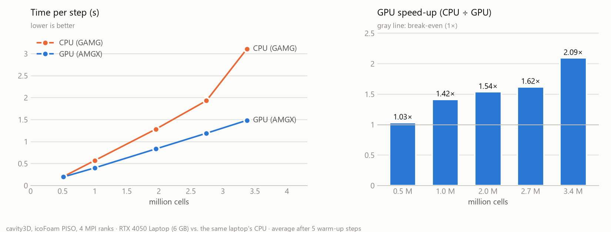
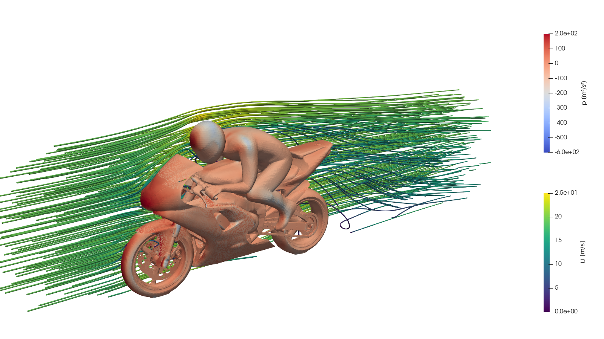
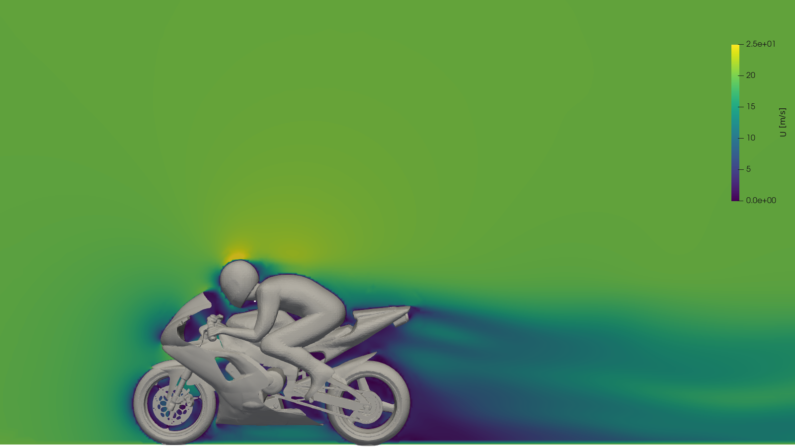

C-style comment in a Makefile
/* Failsafe */ in Make/options: GNU Make only understands #. It broke with missing separator.
Fix: replaced with
# in the three modules.A fork of OpenFOAM-14 with the pressure solver running in CUDA through AMGX, without any change to the Foundation source code. This document is the technical record of how it was built, what broke, and the validation and performance numbers so far.
Three third-party projects connected around OpenFOAM-14, without touching its code, the same way the official petsc4Foam module plugs in.
flowchart LR A["OpenFOAM-14
icoFoam / foamRun
fvSolution: solver amgx"] --> B["amgx4Foam
libamgxFoam.so
lduMatrix::solver wrapper"] B --> C["foam2csr
libfoam2csr.so
LDU → CSR, MPI comms"] C --> D["AMGX (NVIDIA)
libamgxsh.so
Krylov + AMG on the GPU"] D -.residual.-> A
| Layer | Role | Origin |
|---|---|---|
| AMGX | algebraic multigrid solver on the GPU | NVIDIA/AMGX |
| foam2csr | converts the LDU matrix → CSR | mattmartineau/foam2csr |
| amgx4Foam | registers "amgx" as an lduMatrix::solver | maorz1998/amgx4foam (ported) |
| Environment | Version |
|---|---|
| GPU | RTX 4050 Laptop · 6GB · sm_89 (Ada) |
| CUDA | 13.2.86 |
| NVHPC | 25.9 (nvfortran) |
| Intel oneAPI | 2026.1.1 (icx / ifx) |
| GCC | 11.4.0 |
| Distro | WSL2 · Ubuntu 22.04 |
None of them touches the OpenFOAM Foundation: they are all in third-party code (the three projects above), mostly because it was written for a different version of OpenFOAM or CUDA.
/* Failsafe */ in Make/options: GNU Make only understands #. It broke with missing separator.
# in the three modules.foam2csr had NVARCH = 70 (Volta) hard-coded, incompatible with the RTX 4050.
nvcc fatal : Unsupported gpu architecture 'compute_70'
NVARCH set from the GPU's compute capability by build_all.sh (89 for Ada Lovelace).Make/options did not inherit $(PFLAGS) $(PINC), so mpi.h was not found.
EXE_INC.The CUB/Thrust bundled with CUDA 13.2 (CCCL) needs C++17; the build used -std=c++14.
error: CUB requires at least C++17. error: libcu++ requires at least C++ 17.
-std=c++17 in foam2csr's wmake rule.Three dependencies, same pattern: the code expects one name, the Ubuntu package installs another.
| Expected | Actual |
|---|---|
| libzoltan.so | libtrilinos_zoltan.so |
| libpetsc.so | libpetsc_real.so |
| libfoam_csr.so | libfoam2csr.so |
-I/usr/local/cuda-11.6/include hard-coded in the amgx4Foam wrapper.
/usr/local/cuda (a symlink to the active version).MeshObject renamed in v14OpenFOAM-14 replaced MeshObject<Mesh,Tag,Type> with DemandDrivenMeshObject, with different tag categories (TopoChangeableMeshObject requires 4 pure virtual methods our class does not need).
DemandDrivenMeshObject with the DeletableMeshObject tag (no pure virtuals: the class only needs to be recreated when the mesh changes).cyclicAMILduInterface.H no longer exists, and it was not actually used by any function.
#include removed.thisDb() → db()Method renamed in v14's lduMesh interface.
foam2csr uses PETSc types internally, but nothing on the execution path called PetscInitialize: the original code relied on another component (removed in this fork) for that.
Signal: Segmentation fault (11) #7 PetscVFPrintfDefault #8 AmgXSolver::setDeviceCount()
PetscInitializeNoArguments() guarded by PetscInitialized(), in the context constructor.AMGX only lets you query the residual after the solve if store_res_history is on, and it was not in the initial configuration JSON.
"store_res_history": 1 in the main solver config.Running icoFoam without mpirun never initializes MPI, but AMGX calls MPI functions unconditionally.
mpirun -np N icoFoam -parallel (N ≥ 2).const-correctnessconst double* passed where foam2csr's API expects a non-const PetscScalar*.
const_cast<double*> at the call site (the value is not actually modified).cavity case (moving lid, icoFoam solver): same mesh, three compiler/solver configurations.
| Build | Final p residual | Result |
|---|---|---|
| GCC (CPU, DICPCG) | 8.638e-07 | reference |
| Intel oneAPI (CPU, DICPCG) | 8.638e-07 | identical to GCC |
| AMGX (GPU, PCG+AMG) | 5.248e-19 | converged, final field within ~1e-4 of the CPU |
GCC and Intel produce a bit-for-bit identical pressure field. The GPU converges to the same physics with an expected residual difference: different iterative methods (aggregation-based preconditioner vs. DIC), same target tolerance (1e-6).
Transient 3D lid-driven cavity (icoFoam, PISO, pFinal with relTol 0.001), 4 MPI ranks, measured on 2026-10-11 with the machine idle. Case in tutorials/GPU/cavity3D, data in cuda/benchmarks/cavity3D.md.

| Mesh | CPU (GAMG) | GPU (AMGX) | Speed-up | p iterations, CPU / GPU |
|---|---|---|---|---|
| 0.5 M cells | 0.204 s | 0.197 s | 1.03× | 3.9 / 5.3 |
| 1.0 M | 0.570 s | 0.403 s | 1.42× | 7.8 / 5.7 |
| 2.0 M | 1.283 s | 0.834 s | 1.54× | 8.7 / 5.7 |
| 2.7 M | 1.932 s | 1.192 s | 1.62× | 9.8 / 5.5 |
| 3.4 M | 3.110 s | 1.485 s | 2.09× | 14.6 / 5.6 |
GAMG iterations grow with the mesh; AMGX stays at ~5.5, so the speed-up grows. The 4.9 M mesh did not fit in the 8 GB of WSL RAM.
External aerodynamics, foamRun with incompressibleFluid (SIMPLE, steady state). Average time per iteration between iterations 10 and 100, 4 MPI ranks.
relTol 0.1 in fvSolution and AMGX solved down to the JSON tolerance (1e-6), with 41 iterations per solve against 2 for GAMG. With the tolerance matched, the three runs reach the same Cd (0.720 to 0.721).Why the GPU only ties here. The AMGX pressure solve takes 0.26 s of each 2.48 s iteration, about 10%. The other 90% are velocity, turbulence, matrix assembly and post-processing, which stay on the CPU. Even with an instant pressure solve, the most one could gain is ~12%.
The GPU pays off when the pressure dominates the iteration: transient cases (PISO/PIMPLE) with several correctors and a tight pFinal, as the cavity3D above shows.
ParaView 6, motorBike from the OpenFOAM-14 tutorials (3.2 M cells, 500 SIMPLE iterations), the case used in the GPU benchmarks. Field from the reference run (GAMG on the CPU); the script is cuda/scripts/render_motorbike.py.


Published on GitHubileaof/openFoam-14-cuda, with ready-to-run tutorials in tutorials/GPU.
Transient benchmarkcavity3D from 0.5 to 3.4 M cells: GPU from 1.03× to 2.09×. Result above.
motorBike benchmark3.2 M cells: GPU ties with the CPU (2.48 vs. 2.55 s/iter) because the pressure is only 10% of the iteration.
Apply to WiebePycombustion workflow currently tied to OpenFOAM 13: it will require reconciling the version gap (13 → 14), probably another porting cycle like the one in this document.